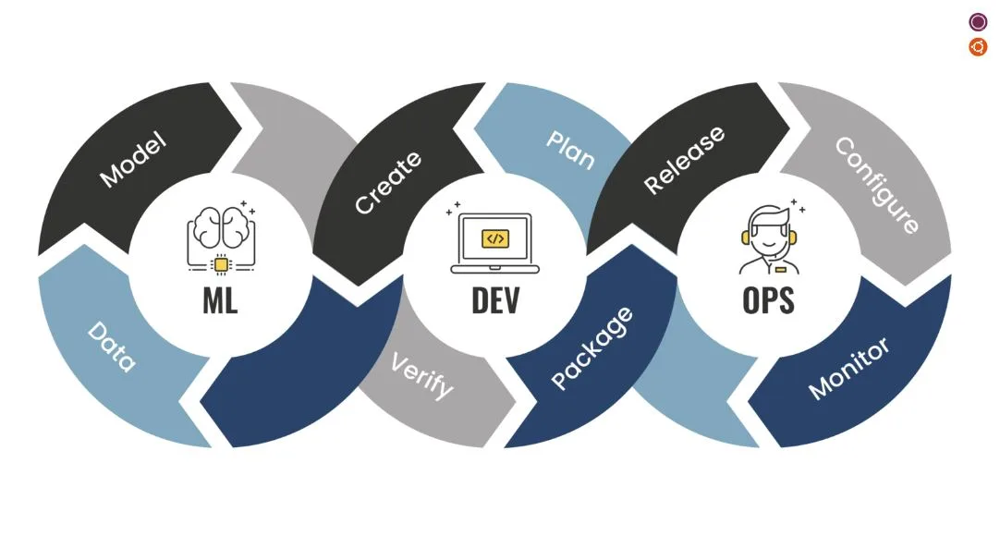

This project is about predicting 30-day hospital readmissions with machine learning. It focuses on binary prediction, determining whether a patient will be readmitted or not, as well as multiple classification to categorize patients into three groups: readmitted within 30 days, readmitted after 30 days, or not readmitted. Several models were tested in this project, including Bayes classifier, K-Nearest Neighbors (KNN), decision trees, logistic regression, Neural Networks, SVM and Random Forest to identify the most effective approach for accurate predictions.


This project focuses on the development of a machine learning model to create a customer segmentation strategy for a sports company. By employing various clustering techniques such as k-means, mean shift, and hierarchical clustering, customers are categorized into distinct segments based on their purchasing behavior and preferences. After forming the clusters, they are analyzed to gain insights that can enhance marketing strategies and improve customer engagement, allowing the sports company to tailor their approach to different customer groups effectively.
This project involves using machine learning to predict future sales of Siemens products. Time series data was analyzed, and models such as XGBoost, SVR, and Random Forest Regression were utilized for precise predictions. Siemens proposed this challenge to our master's program, providing unrestricted access to real-world data.

This project aims to segment hotel customers effectively using data-driven methods. By employing K-Means clustering and Principal Component Analysis (PCA), customer preferences and behavior are analyzed. Additionally, t-SNE is utilized to refine the segmentation process. The objective is to provide the hotel chain with actionable insights to enhance marketing strategies and improve customer satisfaction.
This project focuses on implementing a deep learning model, specifically a Convolutional Neural Network (CNN), to classify different types of skin diseases. Various models, including VGG16, ResNet50, and MobileNet, were tested to determine the most effective approach. Additionally, preprocessing of images and balancing of the dataset were carried out to ensure optimal model performance. By leveraging these techniques, the project aims to identify and classify skin diseases, contributing to improved diagnosis and treatment in dermatology.

Jeronimo Martins Group assigned our master's program a project to build a recommendation system for their Recheio retail store, aiming to boost sales. However, due to a confidentiality agreement, I can't share project details. Yet, this collaboration offered real-world experience and insights, enriching my expertise in recommendation systems and retail analytics.

The ongoing project aims to forecast which properties might be delisted using natural language processing techniques. This involves analyzing listing text, supported by visual tools like bar charts and word clouds. The training data is split into train and validation sets, with preprocessing steps such as removing stop words, applying regular expressions, lemmatization, and stemming. Feature engineering techniques like TF-IDF and GloVe embeddings are applied. Three classification algorithms—K-Nearest Neighbors (KNN), Logistic Regression (LR), and Multi-Layer Perceptron (MLP)—are tested. Model performance is evaluated using Recall, Precision, Accuracy, and F1-Score.

This project focuses on building MLOps pipelines using Kedro for organized, modular code. The pipeline includes unit data tests and a feature store to ensure data quality, and uses MLflow for experimentation and model versioning. Key model metrics and explainability are saved using SHAP and included in reports. The project also covers model serving and data drift evaluation, testing data samples to assess changes in metrics. Tests are also built for relevant functions and pipelines

During my internship at HitSolutions, I worked as a full-stack developer on a project to develop an HR management module for the Mia ERP platform. I used Spring Boot for backend development and Angular for the frontend. I implemented features like absence and reimbursement request handling, with automated email notifications. Database management was done using PostgreSQL, and I followed Agile practices, including Scrum methodology. This experience contributed to my academic success, graduating with high honors, despite confidentiality constraints preventing me from sharing detailed project information.

During my summer internship at itKoncept, I developed a real estate management system using Odoo. I customized components for property listings, client management, and lease administration, enhancing the efficiency and functionality of real estate operations. This project is confidential.